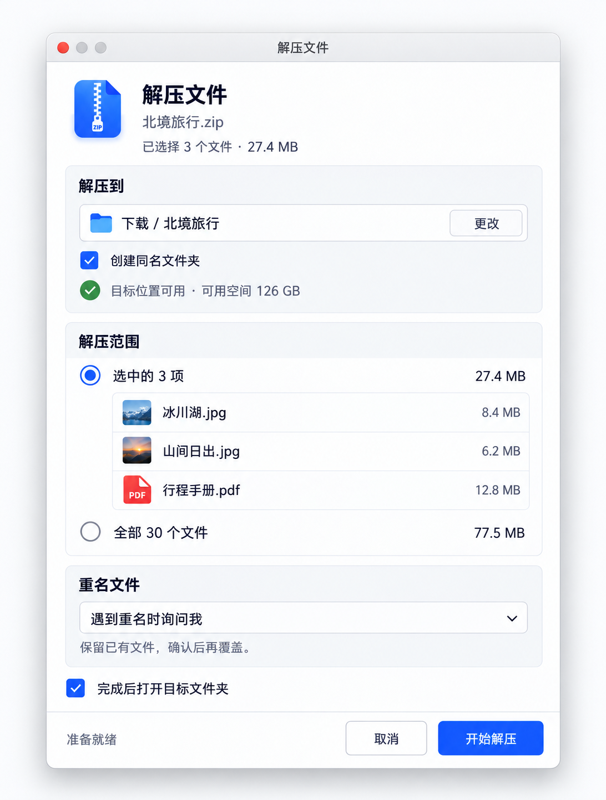

xdzip 高保真设计总览
主界面、操作窗口与历史提案的统一入口。下方展示原始设计图片，HTML 仅用于浏览，不是界面原型。
当前基线由 v1 主窗口、独立解压确认及 v2 补充状态共同构成。当前 v1 主窗口的同版本深色稿尚缺；历史深色图不能视为其对应版本。生成式图像不等于逐像素规范或已实现功能。
当前视觉参考
v1 · 主窗口 · 浅色 v1 · 解压确认 · macOS 独立窗口
v1 · 解压确认 · macOS 独立窗口
v2 · 新建归档 v2 · 重名冲突
v2 · 重名冲突 v2 · 任务进度
v2 · 任务进度 v2 · 部分失败
v2 · 部分失败 v2 · 设置
v2 · 设置 v2 · 任务状态
v2 · 任务状态 v2 · 创建覆盖确认
v2 · 创建覆盖确认 v2 · Windows / Linux 平台对照
v2 · Windows / Linux 平台对照
历史提案（不作为当前实现基线）
保留早期视觉方向供追溯，不与当前原稿混用。
early · 早期浅色主窗口 early · 早期深色主窗口
early · 早期深色主窗口 early · 早期解压面板
early · 早期解压面板